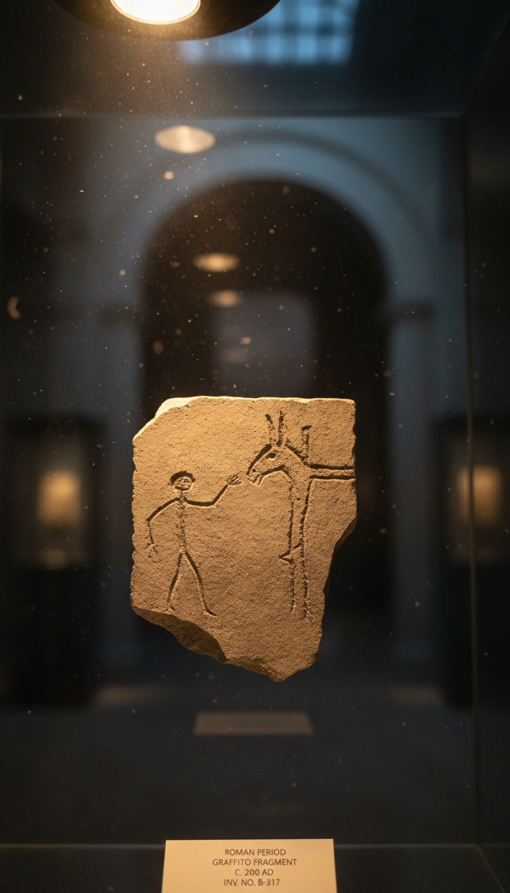

The oldest surviving image of Jesus Christ is not a fresco, not an icon, not a shroud. It is a piece of Roman graffiti scratched into plaster around 200 CE that shows a man worshipping a crucified figure with the head of a donkey.
It is on display in Rome right now. The Palatine Antiquarium museum keeps it in a glass case. Tour buses drive past the building every twenty minutes. Almost no one walks in to look.

The Graffito Nobody Talks About
The artifact is called the Alexamenos graffito. It was discovered in 1857 inside a building called the domus Gelotiana on the Palatine Hill in Rome, a structure Emperor Caligula annexed as a kind of imperial boarding school for pages.
The carving shows a young man raising one hand toward a crucified figure with the head of a donkey. The Greek inscription beneath it reads: ALEXAMENOS SEBETE THEON. Translation: Alexamenos worships his god.
It was carved roughly 200 CE, which puts it more than a century before Constantine legalized Christianity in 313 CE. The Wikipedia entry on the Depiction of Jesus confirms it as among the earliest surviving pictorial references to the crucifixion of Christ.
This Was Not Christian Propaganda. It Was Roman Mockery.
The donkey head was not a random insult. Roman writers genuinely believed Christians worshipped a donkey-headed god. Tertullian wrote about the rumor in his Apologeticus around 197 CE, complaining that pagans called the Christian deity onokoites, the donkey-begotten one.
Minucius Felix recorded the same accusation in his dialogue Octavius, where the pagan character Caecilius claims Christians venerate the head of an ass. Both authors were writing within years of when the Alexamenos graffito was carved into that Palatine wall.
The mockery was specific. It was widespread. It was understood. Which means the first surviving image of Jesus in the historical record is not a devotional image at all. It is a Roman page making fun of his classmate for praying to a crucified animal.
The First Christian Jesus Was a Roman Boy
Forty years after the Alexamenos graffito, Christians painted their own version. The location was Dura-Europos, a Roman garrison town on the Euphrates in modern Syria. The site contained a house church with a baptistry, dated to around 240 CE, the oldest known Christian house of worship ever excavated.
The Jesus painted on its walls is young. Clean shaven. Short hair. He looks like a Roman youth, not a Galilean carpenter. The frescoes are now held at the Yale University Art Gallery in New Haven, Connecticut, having been excavated in the 1930s by a joint Yale-French expedition.
Ten years later, around 250 CE, the same figure shows up in the Catacomb of Priscilla beneath the Via Salaria in Rome. He appears as the Good Shepherd, a beardless young man in a short tunic carrying a lamb across his shoulders. Beardless. Roman. Approximately twenty years old.
The Bearded Jesus Was an Invention
The bearded long-haired Jesus that hangs in every Western church did not appear in any consistent form until around 300 CE, and did not become the dominant image in Eastern Christianity until the 6th century. In the Latin West, it took even longer to standardize.
The version most people picture today, with flowing chestnut hair, full beard, Northern European bone structure and pale skin, was solidified by Renaissance painters in the 1500s. Leonardo da Vinci's Last Supper, completed 1498. Raphael's Transfiguration, completed 1520. Albrecht Durer's self-portrait as Christ, completed 1500.
Those three paintings, produced inside a 22-year window, locked in the visual template that has now dominated Christian art for 500 years. It is not the original. It replaced the original.
The oldest surviving image of Jesus was carved by a Roman teenager to mock his Christian classmate. It is in a museum in Rome. The Vatican is a 15 minute drive away. Almost nobody asks why.
What the Synod of Elvira Already Knew
The early church was nervous about images of Christ from the beginning. The Synod of Elvira, held in Spain around 306 CE, issued Canon 36, which stated that paintings should not be in churches, lest what is worshipped be depicted on walls. That decree predates Constantine.
The Byzantine iconoclasm crisis of the 8th and 9th centuries went further. Emperor Leo III banned and destroyed religious images of Christ across the Eastern Empire starting in 726 CE. Thousands of icons were burned. The clergy fought over what Jesus could even be allowed to look like.
John Calvin and his followers did it again in the 1500s during the Protestant Reformation. Calvinist mobs stripped images of Christ from churches across the Netherlands, Scotland and parts of France in coordinated waves of iconoclasm between 1566 and 1580. Evangelical Protestants still avoid Jesus imagery in worship spaces to this day.
Where the Original Sits Right Now
The Alexamenos graffito is currently housed in the Palatine Antiquarium museum on the Palatine Hill in Rome, catalog item inventoried since its 1857 discovery during excavations led by Italian archaeologist Pietro Rosa under the patronage of Napoleon III.
The Dura-Europos baptistry frescoes are at the Yale University Art Gallery, 1111 Chapel Street, New Haven. The Good Shepherd fresco from the Catacomb of Priscilla is still in situ beneath the Via Salaria 430 in Rome, accessible by guided tour through the Pontifical Commission of Sacred Archaeology.
All three predate the bearded European Jesus by at least 250 years. All three are publicly accessible. All three contradict the standard image. None of them are featured on the postcards sold outside St Peter's Square.
The image you were raised with is the fourth draft. The first draft was a mockery carved by a Roman schoolboy who thought Christians prayed to a donkey. The second was a clean-shaven Roman youth in a Syrian baptistry. The third was a shepherd in a Roman catacomb. The fourth was painted by Renaissance Italians who never saw the face they were inventing.
The donkey-headed original still hangs in Rome. It has been there since 1857. If the church wanted it buried, it would have been buried a long time ago. So why is it still on display, and why does almost nobody know it exists? Drop your theory in the comments. I want to hear who you think benefits from keeping the fourth draft as the only one anybody sees.
Before you go
7 books the Vatican doesn't want you reading. Free PDF — the texts they cut, with sources. Joined by 140+ Inner Circle members.
No spam. Unsubscribe anytime.
Go deeper
The Hidden Canon, Vol. I — Enoch. Jubilees. Thomas. Mary. Judas. 90 pages, 14 chapters, every receipt cited. The books your Bible quietly removed.
Read the Canon →Books that informed this investigation
As an Amazon Associate, Hidden Epoch earns from qualifying purchases. Cost to you: nothing.
Research safely
The VPN we use to research without being tracked. First 3 months free.
Get NordVPN →